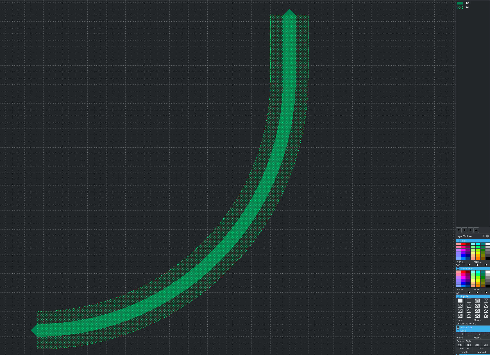

Getting Started#
As an example we will build a small waveduide and instantiate a circular bend waveguide and connect them.
First let’s create some layers. We will use the standard library for this.
Create a layers.py. The full one can be downloaded here: layers.py
Additionally we will create a Enclosure. Enclosures allow to automatically generate claddings with minkosky sums or use a function to apply claddings to a cell or region. This enclosure will add the cladding to the bend we will use later.
1import kfactory as kf
2
3
4class LAYER(kf.LayerEnum):
5 SI = (1, 0)
6 SIEXCLUDE = (1, 1)
7
8
9si_enc = kf.utils.Enclosure([(LAYER.SIEXCLUDE, 2000)])
This will use the standard Library of KFactory. A Library is the equivalent of a Layout object in KLayout and keeps track of the KCells. It mirrors all the other functionalities of a Layout object.
Ports are created with the create_port() function. You can either specify a transformation as here or specify them in a similar manner to gdsfactory. See the API doc for more information.
Now, let’s create a KCell for a waveguide. We will use the autocell().
This will make sure that if we call the function multiple times that we don’t create multiple cells in the layout.
Addiontally, compared to cell() it will also automatically name the cells using
the function name and the arguments and keyword arguments of the function.
In the end we will let KFactory take care of the naming of the ports we want to add.
This will allow them depending on the orientation of the port. This will sort the ports by orientation
(0,1,2,3 -> E,N,W,S) and by ascending x (N/S orientation) respectively y (E/W orientation) coordinates.
1from layers import LAYER
2
3import kfactory as kf
4
5
6@kf.autocell
7def waveguide(width: int, length: int, width_exclude: int) -> kf.KCell:
8 """Waveguide: Silicon on 1/0, Silicon exclude on 1/1"""
9 c = kf.KCell()
10 c.shapes(LAYER.SI).insert(kf.kdb.Box(0, -width // 2, length, width // 2))
11 c.shapes(LAYER.SIEXCLUDE).insert(
12 kf.kdb.Box(0, -width_exclude // 2, length, width_exclude // 2)
13 )
14
15 c.create_port(
16 name="1", trans=kf.kdb.Trans(2, False, 0, 0), width=width, layer=LAYER.SI
17 )
18 c.create_port(
19 name="2",
20 trans=kf.kdb.Trans(0, False, length, 0),
21 width=width,
22 layer=LAYER.SI,
23 )
24
25 c.autorename_ports()
26
27 return c
28
29
30if __name__ == "__main__":
31 kf.show(waveguide(2000, 50000, 5000))
The kf.show will create a GDS in the temp folder and then send the GDS by klive to KLayout (if klive is installed).
By running this with python waveguide.py, this should show us a waveguide like this:
Afterwards let’s create the composite cell complex_cell.py. This one instantiates a waveguide and a circular bend and then connects them.
1from layers import LAYER, si_enc
2from waveguide import waveguide
3
4import kfactory as kf
5
6
7@kf.autocell
8def composite_cell() -> kf.KCell:
9 c = kf.KCell()
10
11 bend = c.create_inst(
12 kf.pcells.circular.bend_circular(
13 1000 * c.klib.dbu, 20000 * c.klib.dbu, LAYER.SI, enclosure=si_enc
14 ) # the standard kf.pcells are in um, so we need to convert to dbu
15 )
16 wg = c << waveguide(1000, 5000, 5000)
17
18 wg.connect("o1", bend, "o2")
19
20 c.add_port(name="1", port=bend.ports["o1"])
21 c.add_port(name="2", port=wg.ports["o2"])
22
23 c.autorename_ports()
24
25 c.draw_ports()
26
27 return c
28
29
30if __name__ == "__main__":
31 kf.show(composite_cell())
With add_port() an existing port of an instance can be added to the parent cell. connect() allows an instance to be transformed so that one of its ports is connected to another port.
You will get a cell like this:
